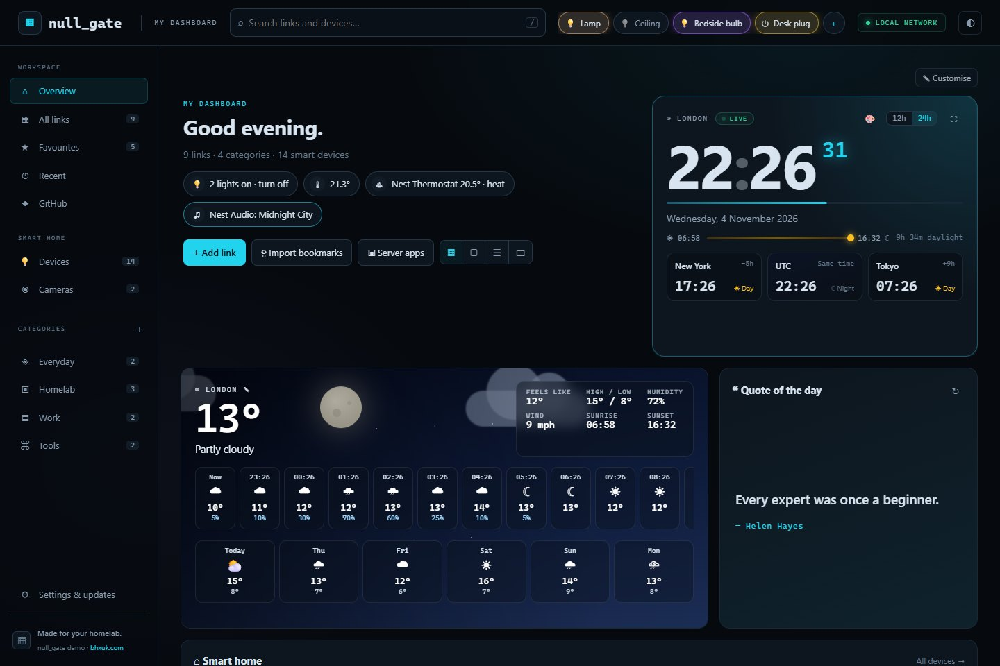

Links, organised
Categories, favourites, search and drag and drop. Paste a list or import browser bookmarks, .url, .webloc, CSV or Markdown.
Your links, your homelab apps, the time, the weather and your smart home. One fast dashboard that lives on your own server and never leaves your network.

These are real screens from null_gate running with sample data. Pick a view to see it.
Categories, favourites, search and drag and drop. Paste a list or import browser bookmarks, .url, .webloc, CSV or Markdown.
Six clock themes, world clocks, a daylight bar and live weather with an animated sky. No API key needed.
One click adds Plex, the *arr apps, qBittorrent, Home Assistant, Portainer, Glances and more, with editable ports.
Lights, speakers, thermostats, plugs, scenes and cameras through Home Assistant. Pin your favourites to the top bar.
Resizable overview tiles, four link layouts, dark and light themes, six accents and three backgrounds.
New releases install automatically, with a snapshot first and an automatic rollback if anything fails.
One Docker container runs one Python service with no third-party packages. Your browser talks to it over your LAN; everything you save lands in a folder on your server.
data/backups/.null_gate has no login. It is built for a trusted home network: it binds to your LAN address, refuses public clients and checks Host and Origin on every change. Anyone who can reach it can edit it, so never forward its port to the internet.
You need a Linux server with Docker Engine, Docker Compose v2 and Git. SSH in and run:
$ git clone https://github.com/bhxuk/null_gate.git cd null_gate bash install.sh ▦ null_gate ▌ ───────────────────────────────────────── Your links, apps and smart home in one place. Designed by bhxuk.com · github.com/bhxuk/null_gate ───────────────────────────────────────── › Checking Docker, Compose and Git › Creating .env › Looking for a free port Port 8088 is already in use. Pick a free one: 1) 4242 the answer, twice 2) 7777 lucky sevens 3) 3141 pi c) custom port Choice [Enter = 4242]: 1 › Building and starting the container ✓ null_gate is running Open http://192.168.1.20:4242
Run the installer.It finds your LAN address, user and time zone, checks which ports are taken and lets you pick a free one, then starts the container.
Open the address it prints.Add links, import bookmarks or click Server apps to add your homelab in one go.
Connect Home Assistant (optional).Paste its address and a long-lived token in Settings → Smart home.
Forget about it.Updates install themselves. Turn that off any time in Settings → Updates.
Free and open source under the MIT licence.